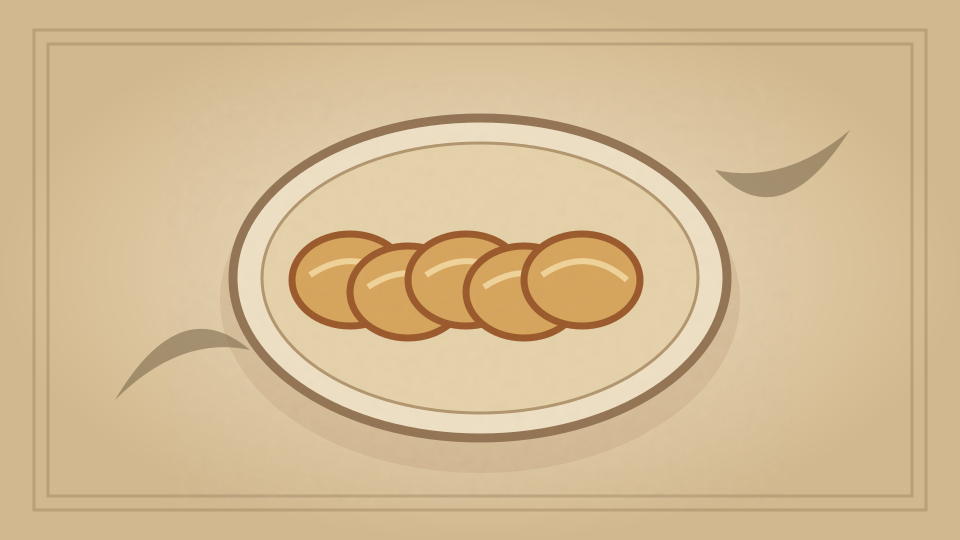

1910 · Fannie Merritt Farmer · BREAD AND BREAD MAKING
New England Brown Bread
The Boston Cooking-School Cook Book

Historical Recipe
The following text is extracted from the 1910 edition, retaining historical terminology and quantities.
Original Ingredients & Directions
1½ cups stale bread 3¼ cups cold water ¾ cup molasses 1½ teaspoons salt Rye meal 1½ cups each Granulated corn meal Graham flour 3 teaspoons soda
1½ cups stale bread
3¼ cups cold water
¾ cup molasses
1½ teaspoons salt
Rye meal
1½ cups each
Granulated corn meal
Graham flour
3 teaspoons soda
Soak bread in two cups of the water over night. In the morning rub through colander, add molasses, dry ingredients mixed and sifted, and remaining water. Stir until well mixed, fill buttered one-pound baking-powder boxes two-thirds full, cover, and steam two hours.
Automatically extracted transcription; editorial verification pending. Historical instructions may not meet modern food-safety standards.